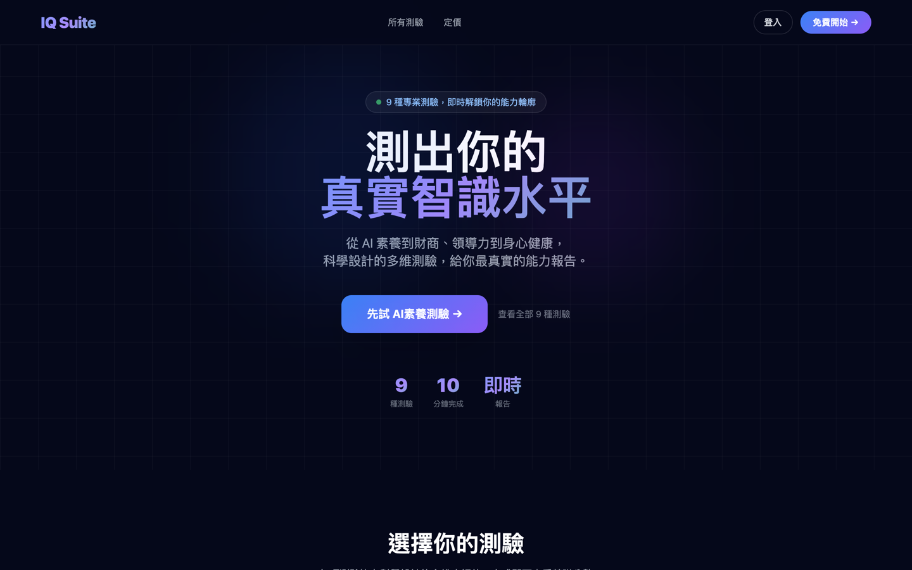
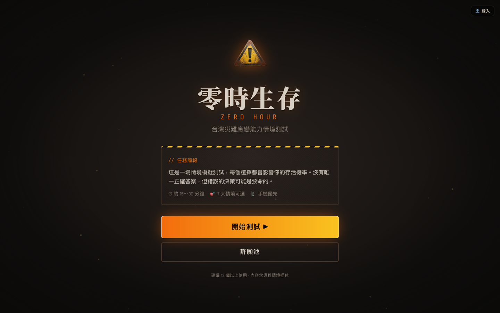
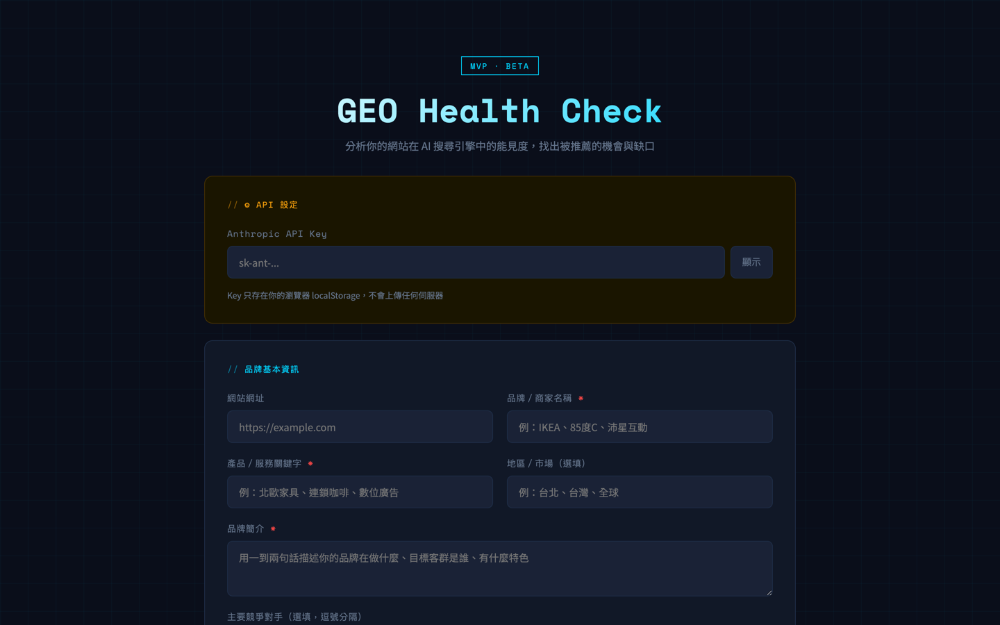
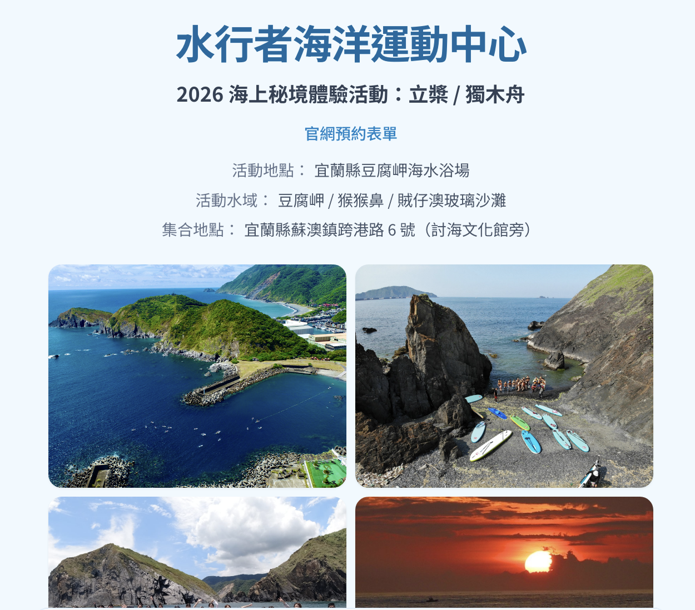

一個水上運動教練一個月超過 2 萬行程式碼一字未寫，用 30 天上線了 3 個專案。只花了 Claude Pro 20 美金月費。
在你繼續讀之前，我想先跟你說清楚我是誰。
「會不會寫程式」這個問題，已經改變了。
每個專案的起點、過程、踩過的坑、學到的事。
用 AI 幫社群小編完成文案發想、圖片生成、排程到自動發文的全流程工具。目標是讓一個人可以同時管理 Facebook、Instagram、Threads 三個平台，不需要重複操作，大幅減少社群管理的時間成本。
水行者海洋運動中心需要長期維護社群，我自己就是潛在用戶。前端由 Lovable 協助開發，這是我所有開發技能的訓練場——前端 UI、資料庫、網址申請、雲端伺服器、金流串接，全部都是在這個專案裡第一次練到的。

一個涵蓋六種測驗的線上平台：AI 智商（AIIQ）、財商（FQ）、情商（EQ）、領導力（LQ）、社群行銷力（SMQ）、戶外安全力（OSQ）。每種測驗都有完整的加權計分引擎，測完可以購買付費深度報告，也可以分享「我的 AIIQ 超越了 88% 受測者」這類社群卡片。
這是四個專案裡技術完整度最高的一個。這裡有一個亮點：Python DOCX 解析器——先在 Word 文件裡把所有題目和計分邏輯寫好，然後用 Python 把 Word 文件自動解析成 TypeScript 格式的資料結構，直接餵給前端使用。

以台灣常見災難情境為主題的教育型問答遊戲：地震、海嘯、戰爭、異常天候、恐怖攻擊、疫情、不明生物，共 7 大情境、159 道題目，每題都有分支邏輯。玩完後有 S/A/B/C/D/F 評級，付費可以下載 PDF 版的完整生存報告。
這是四個專案裡開發速度最快的。能在一週內完成，關鍵不是技術，而是每天只問一個問題：今天最重要的一件事是什麼？

台灣第一個繁體中文 GEO（Generative Engine Optimization，生成引擎優化）分析工具。「讚聲」來自台語，意思是有人幫你說好話、幫你背書——這正是 AI 時代品牌需要的能力。
SEO 是為了讓 Google 找到你。GEO 是為了讓 AI 推薦你。兩者的邏輯完全不同——SEO 靠關鍵字密度和反向連結，GEO 靠的是你的內容有沒有被 AI 模型認為是「值得引用的來源」。前端由 Lovable 協助開發，技術組合是 Claude 建議的。

我自家水行者海洋運動中心的官網預約表單。客戶在 waterman-sports.com 上一頁式填表 → LINE 群組即時通知我 → 顯示匯款資訊讓客戶截圖存檔。兩天就從零做到嵌入主站上線。
這個專案的關鍵決策是零成本、零維護：資料庫用 Google Sheet（手機直接看訂單）、後端用 Google Apps Script（免費、免部署）、前端丟 GitHub Pages（免費、push 自動 deploy）、嵌回 WordPress 用 iframe（不跟主題樣式打架）。每月固定成本：NT$ 0。
這是整份報告裡我最希望你認真看的部分。金流串接是我遇到過最浪費時間的事，前後嘗試了四家，走了很多冤枉路。
我把這一個月試錯出來的東西整理成可以複製的流程，讓你少走冤枉路。核心原則只有一個：在動手開發之前，先把事情想清楚。
這三個錯誤我都犯過，現在整理出來讓你少走彎路。
這一章沒有廢話。你需要知道準備多少錢、裝什麼工具、哪些是必要的。
Claude Pro US$20/月（必要）· Lovable US$25/月（前端 UI，建議）Supabase 免費起（必要）· PostgreSQL + Auth + Edge Functions + RLSCloudflare Pages 部署免費 · Cloudflare 網域 US$10/年 · Zeabur US$5/月（視需求）Lemon Squeezy 單次數位商品（5% + US$0.5/筆）· Paddle SaaS 訂閱制（推薦）Claude Haiku / SonnetGPT-4o miniGemini 2.5 FlashGoogle Imagen 4GitHub 免費（建議養成習慣）「程式開發如今可能將會變成每個人必備的技能，就如現在大家常用的文書處理軟體一樣。學習 AI 的使用將會大幅提升個人的學習與生產能力，也將釋放人的無限想像力。」— 陳建文，寫於完成四個專案之後
做完這四個專案之後，我對「程式開發」這件事的看法徹底改變了。
它不再是工程師的專屬技能，而是一種即將變成人人必備的能力。
這四個專案都還在成長。如果你對 Vibe Coding 有任何問題，歡迎找我。